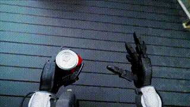
Intro
I am a co-founder of Archon Robotics (源策未来), where I serve as Head of AI. I am also pursuing a PhD at the University of Hong Kong (HKU) as a member of OpenDriveLab and MMLab, under the supervision of Prof. Ping Luo and Prof. Hongyang Li. I earned my Master's in Robotics from the Robotics Institute at the University of Michigan, Ann Arbor, in 2020, after a Bachelor's degree in Mechanical Engineering from Shanghai Jiao Tong University in 2019.
My research focuses on robot learning, autonomous driving, and robotic systems. Representative projects are highlighted below.
Research
(*: Equal contribution. †: Project lead/Corresponding author.)
Selected Publications (See all here.)
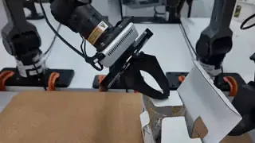
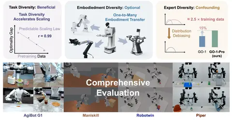
Intelligent Robot Manipulation Requires Self-Directed Learning
Li Chen, Chonghao Sima, Kashyap Chitta, Antonio Loquercio, Ping Luo, Yi Ma, Hongyang Li.
CVPR Workshop, 2026
ICLR Workshops, 2026
[paper]
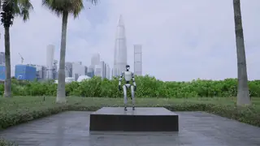
Agility Meets Stability: Versatile Humanoid Control with Heterogeneous Data
Yixuan Pan*, Ruoyi Qiao*, Li Chen, Kashyap Chitta, Liang Pan, Haoguang Mai, Qingwen Bu, Hao Zhao, Cunyuan Zheng, Ping Luo, Hongyang Li.
IEEE International Conference on Robotics and Automation (ICRA), 2026
[page]
[paper]
[code]
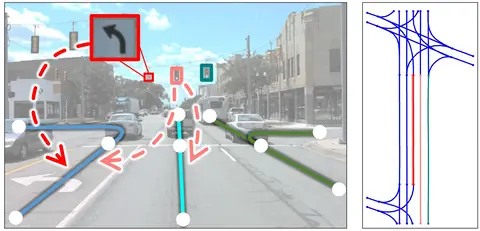
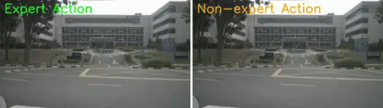
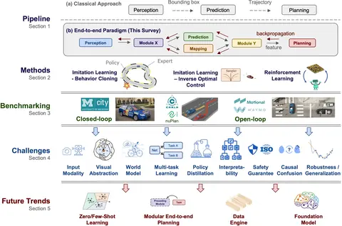
End-to-end Autonomous Driving: Challenges and Frontiers
Li Chen, Penghao Wu, Kashyap Chitta, Bernhard Jaeger, Andreas Geiger, Hongyang Li.
IEEE Transactions on Pattern Analysis and Machine Intelligence (T-PAMI), 2024
[TPAMI Top-1 Popular, Jan 2025 - Now]
[page]
[paper]
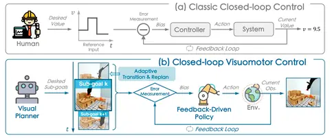
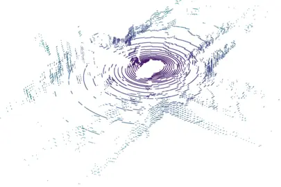
Generalized Predictive Model for Autonomous Driving
Jiazhi Yang*, Shenyuan Gao*, Yihang Qiu*, Li Chen†, Tianyu Li, Bo Dai, Kashyap Chitta, Penghao Wu, Jia Zeng, Ping Luo, Jun Zhang, Andreas Geiger, Yu Qiao, Hongyang Li†.
IEEE/CVF Conference on Computer Vision and Pattern Recognition (CVPR), 2024
Highlight (11.9%)
[paper]
[dataset]
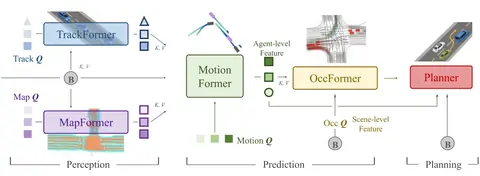
Planning-oriented Autonomous Driving
Yihan Hu*, Jiazhi Yang*, Li Chen*†, Keyu Li*, Chonghao Sima, Xizhou Zhu, Siqi Chai, Senyao Du, Tianwei Lin, Wenhai Wang, Lewei Lu, Xiaosong Jia, Qiang Liu, Jifeng Dai, Yu Qiao, Hongyang Li†.
IEEE/CVF Conference on Computer Vision and Pattern Recognition (CVPR), 2023
Best Paper (2/9155)
[paper]
[code]
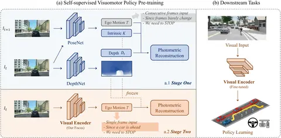
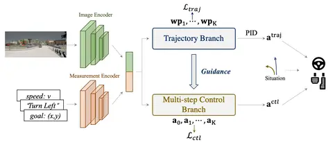
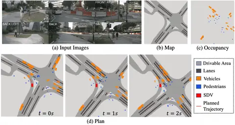
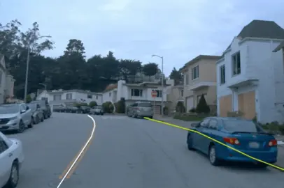
PersFormer: 3D Lane Detection via Perspective Transformer and the OpenLane Benchmark
Li Chen*†, Chonghao Sima*, Yang Li*, Zehan Zheng, Jiajie Xu, Xiangwei Geng, Hongyang Li†, Conghui He, Jianping Shi, Yu Qiao, Junchi Yan.
European Conference on Computer Vision (ECCV), 2022
Oral Presentation (2.7%)
[paper]
[code]
[dataset]
Selected Preprints (See all here.)
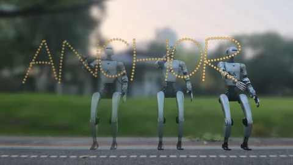
World Engine: Towards the Era of Post-Training for Physical AI
Tianyu Li*, Li Chen*, Caojun Wang*, Haochen Liu*, Kashyap Chitta, Yuhang Lu, Naisheng Ye, Yufei Wang, Jiaxin Peng, Jin Pan, Zhaoyu Su, Andrei Bursuc, Shengbo Eben Li, Andreas Geiger, Honglin Bian, Hongyang Li*, Peng Su.
arXiv preprint, 2026
[page]
[code]
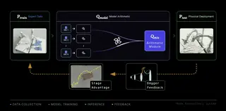
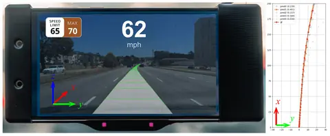
Activity
- Workshop/Tutorial Organizer:
- 2nd Workshop on Multi-Agent Embodied Intelligent Systems, CVPR 2025
- 1st Workshop on Cooperative Intelligence for Embodied AI, ECCV 2024
- Towards Building AGI in Autonomy and Robotics, CVPR 2024 (Primary Organizer)
- End-to-end Autonomous Driving: Emerging Tasks and Challenges, CVPR 2023
- Workshop on Scene Representations for Autonomous Driving, ICLR 2023
- Area Chair:
- CVPR 2027, ECCV 2026
- Reviewer:
- Journal: Nature Communications, IEEE T-PAMI, IEEE T-RO, IEEE RA-L
- Conference: CVPR, ICCV, ECCV, NeurIPS, ICLR, ICML, RSS, ICRA, IROS, WACV
- Teaching Assistant:
- DASC7606 Deep Learning (2022-2023 Spring, 2023-2024 Spring)
- COMP7506 Smart Phone Apps Development (2024-2025 Spring, 2025-2026 Summer)
Honors
- Outstanding/Top/Gold Reviewer: CVPR'23, NeurIPS'23, ICML'26
- The World Artificial Intelligence Conference (WAIC) Yunfan Award, 2023
- HKU Presidential PhD Scholar (HKU-PS), 2023
- Outstanding Graduate of Shanghai, 2019